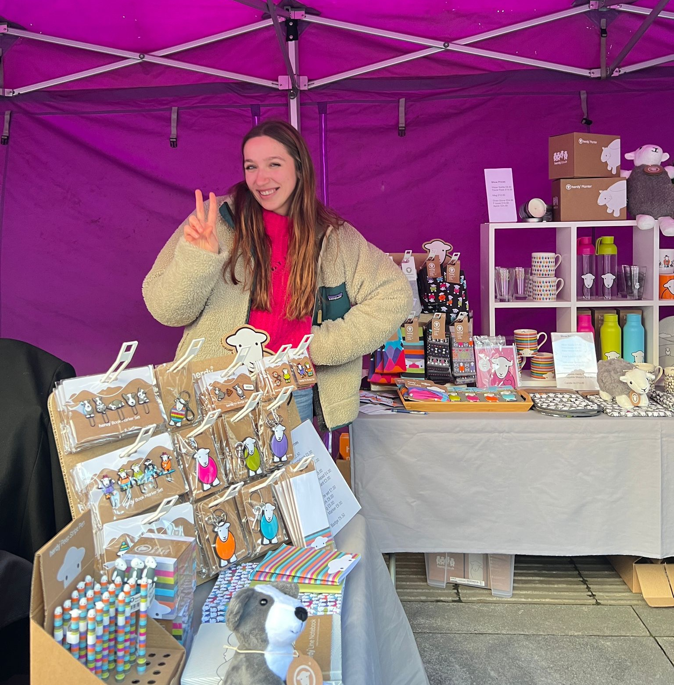

About Me
I study MSc Digital and Social Media Marketing, this subject is my passion and fascination with today’s society! So, why not turn a hobby into work! Wherever I worked during my undergraduate (and still in masters), I’ve always found my way into the marketing departments. This is where my skills are most useful in growing businesses. I’ve marketed various brands, my most proud work was with The Gilpin and their Michelin starred restaurant Source. My most recently work was with Herdy, where I assisted them in collaborating with my university (Lancaster) in order to reach a new market of Gen Z consumers. We did this by bringing Herdy into the student union markets.

I’m a proud Lithuanian living in the beautiful Lake District. Of course this means I love the outdoors and hiking the highest peaks. A lot of my work is inspired through the calm, historical, and natural nature around me. So much so that I even have a Lithuanian/English TikTok account, sharing this stunning area, knowledge, and silly fun with this very niche audience. However, I still enjoy the buzz of London where I raised. London taught me quick and sharp thinking. Along with most of my leadership and management skills. But most importantly, my passion for meeting new people, learning new ideas, and networking!